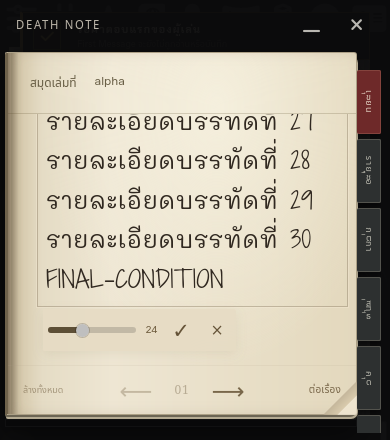
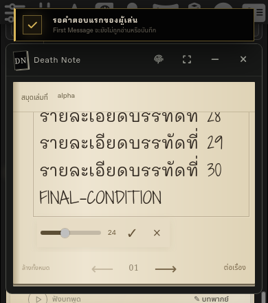
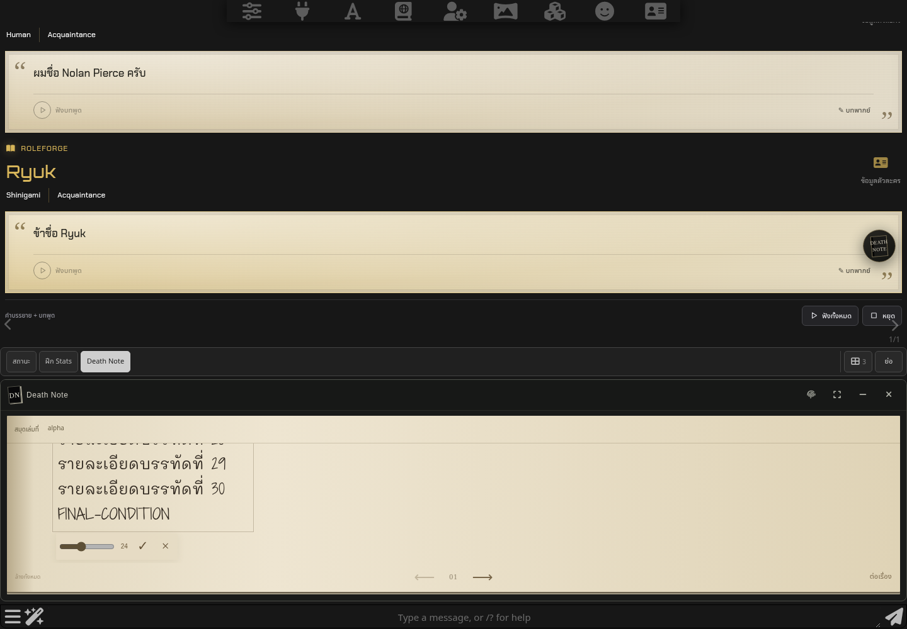

มือถือขณะพิมพ์ข้อความยาว
จำลองพื้นที่หน้าจอเหนือคีย์บอร์ด 390 × 440px ใน SillyTavern ไม่ใช่การทดสอบคีย์บอร์ดบนเครื่องจริง

เต็มหน้าจอ · บรรทัดท้ายและเครื่องมือยังเห็นครบ
เหนือ Chatbar · แผงปรับตำแหน่งชั่วคราวขณะพิมพ์พิมพ์บนคอม

รายละเอียดท้ายข้อความยังถูกส่งในคำขอ Generate ครบหลังผู้เล่นหยิบสมุดผ่านโรล
AI ยืนยันการหยิบแล้ว แผงเปลี่ยนเป็นพื้นที่เขียนและ Inventory มีสมุด โดยไม่ต้องกดหยิบซ้ำ